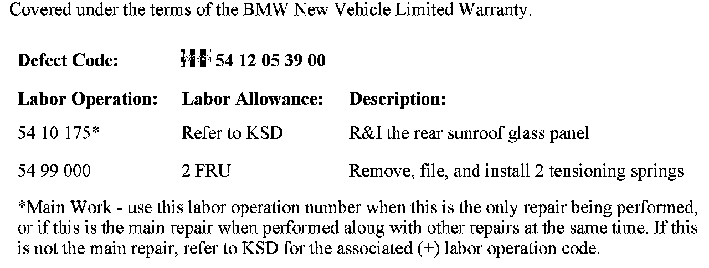
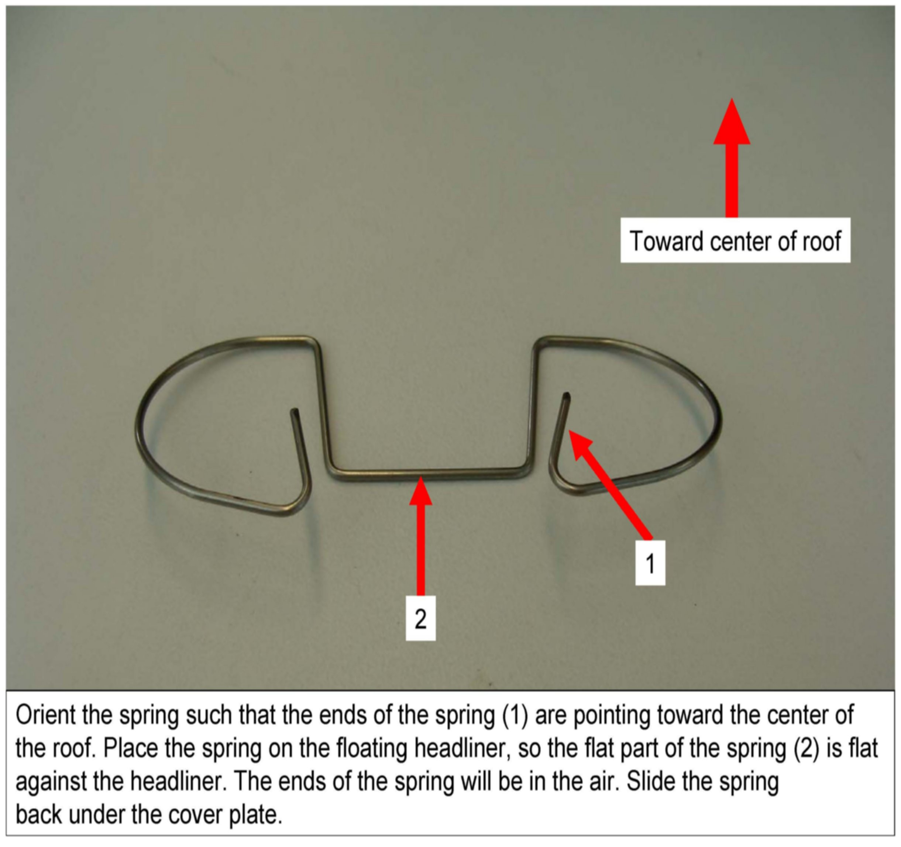
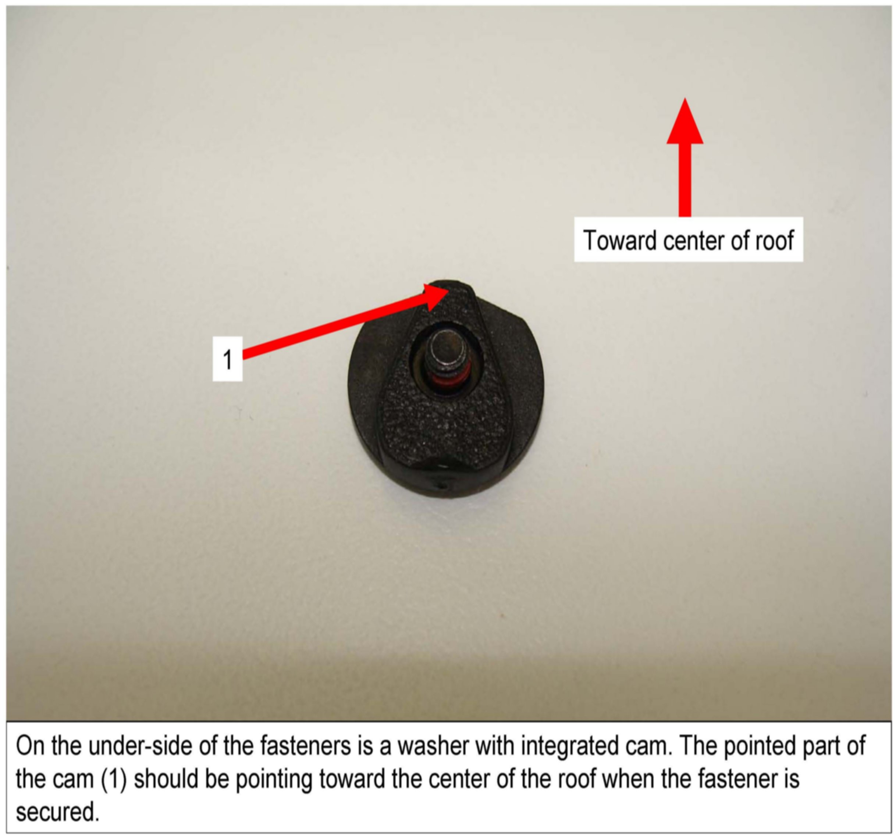

Interior/Body - Sunroof Headliner Squeaking Noise
SI B 54 07 09Special Roofs
August 2010
Technical Service
This Service Information bulletin supersedes S.I. B 51 08 07 dated July 2009.
[NEW] designates changes to this revision
SUBJECT
Squeaking Noise from the Sliding Headliner
MODEL
E53 (X5)
E83 (X3)
E61 (5 Series Sports Wagon)
E91 (3 Series Sports Wagon)
SITUATION
A high-pitched squeaking noise can be heard from the rear sliding headliner panel of the panoramic sunroof while driving. This noise is typically only heard when the sunshades are in the fully closed or in the vented position.
CAUSE
A rough edge on the rear sliding headliner tensioning spring, which rubs against the sliding headliner as the vehicle is driven.
CORRECTION
Smooth the ends of both tensioning springs.
PROCEDURE
1. Remove the rear glass panel from the sunroof per Repair Instruction REP 54 10 175.
2. Partially close the sliding headliner until the forward fastener on the floating headliner, which secures the headliner to the frame, can be seen in the opening where the rear glass was removed. Remove this forward fastener from the left side of the sliding headliner.
3. Close the sliding headliner further to expose the rear fastener on the same panel. Remove this rear fastener from the headliner.
4. Lift the cover plate that each fastener was removed from, and slide the tensioning springs out from underneath it.
5. Use a hand file to smooth any burrs or rough edges from the end of the steel tensioning springs.
6. Reinstall the spring, ensuring that the orientation is the same as when it was removed. The ends of the spring should point toward the middle of the roof. Refer to the attachment B540709 Procedure.pdf for additional details.
7. Reinstall the 2 fasteners. The underside of each fastener has an integrated washer and cam. The orientation of the cam on these fasteners is critical. The pointed part of the cam should point toward the middle of the cassette. Refer to the attachment B540709 Procedure.pdf for additional detail.
8. Reinstall the rear glass panel.

WARRANTY INFORMATION
ATTACHMENTS


view PDF attachment B540709_Procedure.